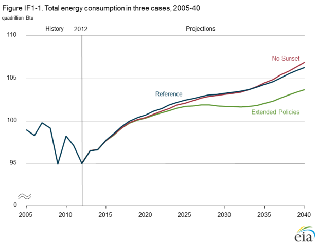
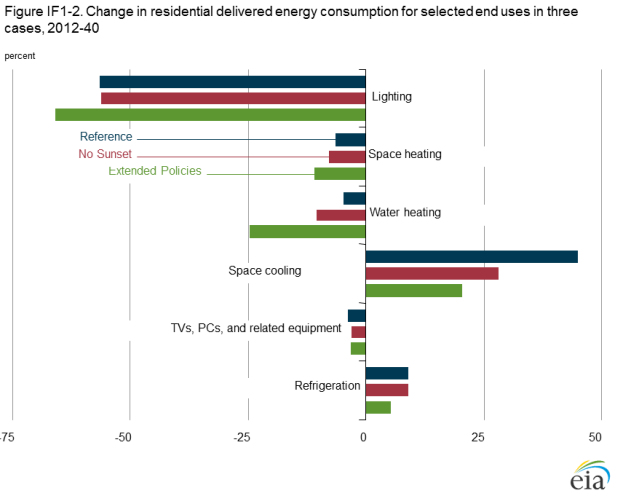
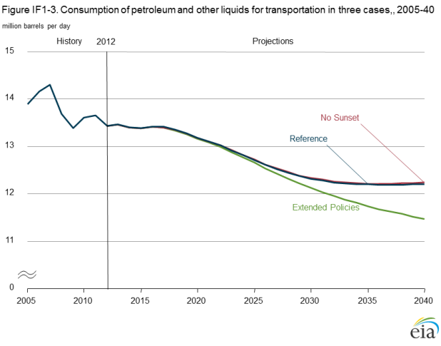
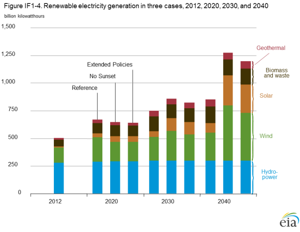
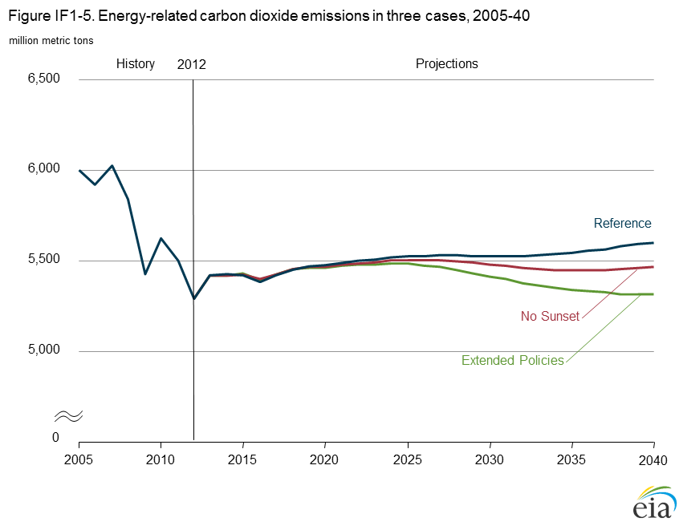
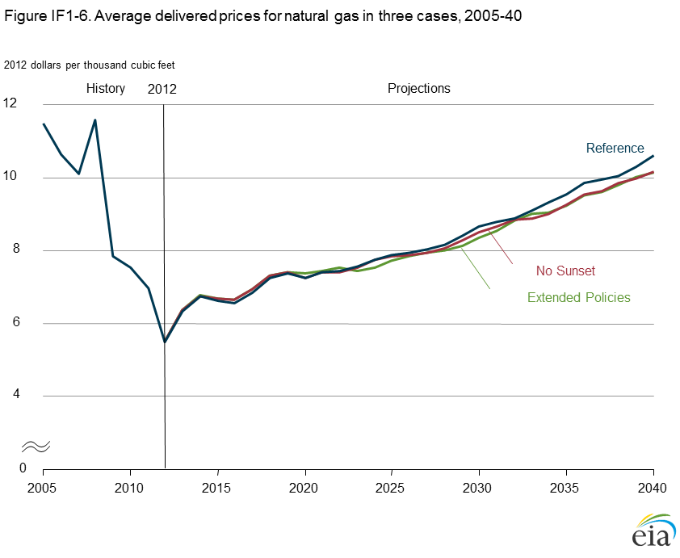

No Sunset and Extended Policies cases
Release Date: 4/21/14
Two alternative cases are discussed in this section to provide insight into the sensitivity of the Reference case to scenarios, in which existing tax credits that have sunset dates are assumed not to sunset (No Sunset case), or other policies (i.e., CAFE standards, appliance standards, and building codes) are expanded beyond current provisions in combination with the elimination of the sunset dates on existing tax credits (Extended Policies case). No attempt is made to cover the full range of possible uncertainties in these areas, and readers should not view the cases discussed as EIA projections of how laws or regulations are likely to, or should, be changed. The cases examined here look only at federal laws or regulations and do not examine state laws or regulations.
The No Sunset and Extended Polices cases generally lead to lower estimates for overall delivered energy consumption, increased use of renewable fuels (particularly for electricity generation), reduced energy-related carbon dioxide (CO2) emissions, lower energy prices, and lower government tax revenues.
Background
The AEO2014 Reference case is best described as a current laws and regulations case, because it generally assumes that existing laws and regulations remain unchanged throughout the projection period unless the legislation establishing the regulations sets a sunset date or specifies how they will change. The Reference case often serves as a starting point for analysis of proposed changes in legislation or regulations. While this definition of the Reference case supports a variety of further analysis, there may be interest in alternative cases that reflect updates or extensions of current laws and regulations that the AEO2014 Reference case excludes. Areas of particular interest include:
- Laws or regulations that have a history of being extended beyond their legislated sunset dates. Examples include the various tax credits for renewable fuels and technologies, which have been extended with or without modifications several times since their initial implementation.
- Laws or regulations that call for periodic updating of initial specifications. Examples include appliance efficiency standards issued by the U.S. Department of Energy (DOE) and Corporate Average Fuel Economy (CAFE) and greenhouse gas (GHG) emissions standards for vehicles issued by the National Highway Traffic Safety Administration (NHTSA) and the U.S. Environmental Protection Agency (EPA).
- Laws or regulations that allow or require the appropriate regulatory agency to issue new or revised regulations under certain conditions. Examples include the numerous provisions of the Clean Air Act that require EPA to issue or revise regulations if it finds that an environmental quality target is not being met.
Analysis cases
The two cases prepared—the No Sunset case and the Extended Policies case—incorporate all the assumptions from the AEO2014 Reference case, except as identified below.
No Sunset case
The sunset provisions for tax credits are eliminated for renewable energy sources in the utility, industrial, and buildings sectors and for energy-efficient equipment in the buildings sector, including the following:
- The production tax credit (PTC) of 1.1 or 2.3 cents/kilowatthour (kWh), depending on the technology, and the 30% investment tax credit (ITC) available for wind, geothermal, biomass, hydroelectric, and landfill gas resources are extended indefinitely as opposed to expiring at the end of 2013.
- For solar power investments, a 30% ITC that is scheduled to revert to a 10% credit in 2016 is assumed to be extended indefinitely at 30%.
- In the buildings sector, personal tax credits for the purchase of energy-efficient and renewable equipment, including photovoltaics (PV), are assumed to be extended indefinitely, as opposed to ending in 2013 or in 2016, respectively, as prescribed by current law. The business ITCs for commercial-sector generation technologies and geothermal heat pumps are assumed to be extended indefinitely, as opposed to expiring in 2016. The business ITC for solar systems is assumed to remain at 30% instead of reverting to 10%.
- In the industrial sector, the 10% ITC for combined heat and power (CHP), which is assumed to end in 2016 in the AEO2014 Reference case [1], is assumed in the No Sunset case to be preserved through 2040.
- The $1.01/gallon (nominal) subsidy for cellulosic ethanol and $1.00/gallon (nominal) biodiesel subsidy are assumed to be extended at those levels from their recent expiration at the end of 2013 through the end of the projection period [2].
Extended Policies case
The Extended Policies case includes additional updates to federal equipment efficiency standards that were not considered in the Reference case or the No Sunset case. Residential and commercial end-use technologies eligible for incentives in the No Sunset case are not subject to new standards. Other than those exceptions, the Extended Policies case adopts the same assumptions as the No Sunset case, in addition to the following:
- Federal equipment efficiency standards are assumed to be updated at periodic intervals, consistent with the provisions in existing law, at levels based on ENERGY STAR specifications or on the Federal Energy Management Program purchasing guidelines for federal agencies, as applicable. Standards also are introduced for products that are not currently subject to federal efficiency standards.
- Federal energy codes for residential and commercial buildings are assumed to be updated periodically, providing additional improvement to new construction. The equipment standards and building codes assumed for the Extended Policies case are meant to illustrate the potential effects of those policies on energy consumption for buildings. No cost-benefit analysis or evaluation of impacts on consumer welfare was completed in developing the assumptions. Likewise, no technical feasibility analysis was conducted, although standards were not allowed to exceed the "maximum technologically feasible" levels described in DOE's technical support documents.
- The AEO2014 Reference, No Sunset, and Extended Policies cases include the joint attribute-based CAFE and vehicle GHG emissions standards for model year (MY) 2012 to MY 2025 for light-duty vehicles (LDVs). The Reference and No Sunset cases assume that the CAFE standards are then held constant at MY 2025 levels in subsequent model years, although the fuel economy of new LDVs continues to rise modestly over time. The Extended Policies case modifies the assumption in the Reference and No Sunset cases, assuming continued increases in CAFE standards at an annual average rate of 1.3% for new LDVs after MY 2025.
- The AEO2014 Reference, No Sunset, and Extended Policies cases include the heavy-duty vehicle (HDV) fuel consumption and GHG emissions standards for MY 2014 to MY 2018. The Reference and No Sunset cases assume that the standards are held constant at MY 2018 levels in subsequent model years, although the fuel economy of HDVs rises modestly thereafter. The Extended Policies case includes an increase in fuel consumption and GHG emissions standards for 13 vehicle size classes.
- In the industrial sector, the ITC for CHP is extended to cover all properties with CHP, no matter what the system size (which may include multiple units), instead of being limited to properties with systems smaller than 50 megawatts (MW) as in the Reference case [3]. Also, the ITC is modified to increase the eligible CHP unit cap from 15 MW to 25 MW. These extensions are consistent with previously proposed legislation.
- The extension of ethanol and biodiesel subsidies assumed in the No Sunset case is not included in the Extended Policies case, because the renewable fuel standard (RFS) program already included in the AEO2014 Reference case tends to determine the levels of ethanol and biodiesel use.
Analysis results
The changes made to the Reference case assumptions in the No Sunset and Extended Policies cases generally lead to lower estimates for overall delivered energy consumption, increased use of renewable fuels (particularly for electricity generation), and reduced energy-related carbon dioxide (CO2) emissions. Because the Extended Policies case includes most of the assumptions in the No Sunset case but adds others, the effects of the Extended Policies case tend to be greater than those of the No Sunset case (with some exceptions discussed below). Both cases result in lower energy prices, because the assumed tax credits and end-use efficiency standards lead to lower energy demand (except in the No Sunset case after 2034, as discussed below) and lower costs for renewable technologies. Appliance purchase costs are also affected. In addition, the government receives lower tax revenues as consumers and businesses take advantage of the tax credits.
Energy consumption
Total energy consumption in the No Sunset case is slightly lower than in the Reference case before 2034 and slightly higher than in the Reference case in the later years of the projection (Figure IF1-1). Improvements in energy efficiency lead to reduced consumption in the No Sunset case, but the demand-increasing effect of lower energy prices fully offsets the efficiency impacts by the end of the projection period. In 2040, total energy consumption in the Extended Policies case is 2% below the Reference case projection, as the combination of tax and other policy extensions reduces overall demand even after taking price declines into account.

figure data
Buildings energy consumption
Renewable distributed generation (DG) technologies
(photovoltaic systems and small wind turbines) provide much
of the buildings-related energy savings in the No Sunset case.
The continuation of tax credits in the No Sunset case spurs
0 increased adoption of DG systems, leading to 59 billion kWh of onsite electricity generation from renewable DG in 2025, compared with 25 billion kWh in the Reference case. In 2040, onsite
electricity generation from renewable sources increases to 145 billion kWh in the No Sunset case—almost three times the amount
of onsite electricity generated in the Reference case in that year.
Similar adoption of renewable DG occurs in the Extended Policies case, while efficiency gains from assumed future standards and more stringent building codes further reduce delivered energy use in the buildings sectors. Delivered energy use for buildings in the Extended Policies case is 1.5%, or 0.3 quadrillion British thermal units (Btu), lower than in the Reference case in 2025 and 5.4%, or 1.1 quadrillion Btu, lower than in the Reference case in 2040. In the No Sunset case, in contrast, delivered energy consumption is only 1.0% (0.2 quadrillion Btu) and 1.8% (0.4 quadrillion Btu) lower than in the Reference case projections for 2025 and 2040, respectively.
Electricity use shows the largest reduction in the two alternative cases relative to the Reference case. Building electricity purchases in 2025 are 1.4% and 1.9% lower in the No Sunset and Extended Policies cases, respectively, and 2.8% and 6.9% lower, respectively, in 2040, when compared with the Reference case. Increased onsite generation decreases electricity purchases in both cases. Additional reductions in electricity purchases occur in the Extended Policies case, as assumed standards increase the market penetration of efficient equipment and building construction. Energy use for water heating in the Extended Policies case shows the largest drop relative to the Reference case, at 16% (0.4 quadrillion Btu) below the Reference case level in 2040. Space heating and cooling also are affected by the assumed standards for equipment and building codes in the Extended Policies case, and energy consumption for those uses is reduced by a combined 6.7% (0.5 quadrillion Btu) from the Reference case level in 2040. In 2040, natural gas use in the buildings sectors is 0.9% and 4.1% below the Reference case level in the No Sunset and Extended Policies cases, respectively.
Residential energy consumption for most end uses moves in the same direction in all three cases, but at different rates (Figure IF1-2). For example, energy use for lighting, which declines in the Reference case, declines further in the Extended Policies case with additional standards; and space cooling, which increases in the Reference case, increases more slowly in the No Sunset case, which assumes the continuation of tax credits for efficient equipment and building shell thermal integrity improvement.
figure data
Industrial energy consumption
The No Sunset case modifies the Reference case assumptions by extending the existing ITC for industrial CHP through 2040. The Extended Policies case starts from the No Sunset case and expands the credit to include industrial CHP systems of all sizes, while raising the system size limit for the maximum credit that can be claimed, from 15 MW of installed capacity to 25 MW. The changes result in 1.2 gigawatts (GW) of additional industrial CHP capacity in the Extended Policies case compared with the Reference case in 2025 and 3 GW of additional capacity in 2040.
From 2025 through 2040, more CHP capacity is installed in the Extended Policies case than in the No Sunset case, but the differences narrow over time. CHP capacity is 0.3 GW higher in the Extended Policies case than in the No Sunset case in 2025, but only 0.1 GW higher in 2040. The Extended Policies case includes a tax benefit that applies to more CHP units than in the No Sunset case, which by itself provides greater incentive to build CHP capacity. However, electricity prices are slightly lower in the Extended Policies case than in the No Sunset case starting around 2024, and the difference grows over time, which reduces the economic attractiveness of CHP. These opposite effects explain why CHP capacity in the Extended Policies case is only slightly higher than in the No Sunset case, and why the difference decreases over time. Also, the median size of the nameplate capacity of industrial CHP units is 10 MW [4], and most CHP systems are well within the 50-MW total system size, which means that relaxing the size constraint is not as strong an incentive for investment as is allowing the current tax credit for new CHP investments to continue after 2016.
Natural gas consumption in the industrial sector averages 10.4 quadrillion Btu per year from 2012 to 2040 in all three cases. However, the pattern of use varies, with the No Sunset and Extended Policies cases showing higher levels of consumption than the Reference case at the end of the projection period.
Transportation energy consumption
The Extended Policies case differs from the Reference and No Sunset cases in assuming that the joint CAFE and greenhouse gas emissions standards promulgated by EPA and NHTSA for model years 2012 through 2025 are extended through 2040, with an assumed average annual increase of 1.3%. Sales of vehicles that do not rely solely on gasoline internal combustion engines for power ( -75 -50 -25 0 25 50 including those that use diesel, alternative fuels, or hybrid electric systems) play a substantial role in meeting the higher fuel economy standards after 2025, growing to 76% of new light-duty vehicle (LDV) sales in 2040, compared with 55% in the Reference case.
Effects of proposed energy provisions in the Energy Savings and Industrial Competitiveness Act of 2013
Senate bill S. 1392, The Energy Savings and Industrial Competitiveness Act of 2013 (ESICA) [5], introduced in July 2013, contains provisions for building energy codes, industrial energy efficiency, federal agencies, and budget offsets. Assuming appropriation of the funding authorized in the bill, EIA examined two key provisions of the proposed legislation: the adoption of updated building energy codes for residential and commercial buildings, and a rebate program for energy-efficient electric motors [6]. Other provisions require further specification by federal agencies or Congress, or they address levels of detail beyond that modeled in the National Energy Modeling System. Amendments have been introduced that may have energy impacts, but they are not part of the bill as of this writing and are not considered in this analysis. Of the two provisions analyzed for AEO2014, the updated building codes have a small effect on energy consumption and CO2 emissions, and the industrial motors rebate program has virtually no effect. The analysis assumes that states will take advantage of incentives offered to implement the updated codes, and that once in place the codes will be effective over time.
Compared with the AEO2014 Reference case, the proposed building codes in ESICA reduce buildings delivered energy consumption by 0.7% in 2025 and 1.1% in 2040. Natural gas shows the largest reduction in buildings' energy use relative to the Reference case, as improved building shells lessen space heating requirements. Lower energy use in the ESICA case leads to lower levels of CO2 emissions than in the Reference case. From 2014 to 2040, energy-related CO2 emissions are reduced by a cumulative total of 307 million metric tons (an annual average of about 12 million metric tons) relative to the Reference case projection.
Residential and commercial consumers save $9.2 billion (2012 dollars) on energy purchases in 2040 in the ESICA case relative to the Reference case, as a result of lower energy demand. From 2014 to 2040, the cumulative reduction in residential and commercial energy purchases in the ESICA case totals $96.9 billion. Some of those savings are assumed to be offset by additional costs to the buildings sectors in meeting more stringent building codes, but such costs are not comprehensively modeled by EIA. The electric motor rebate program has a minimal impact on energy use, because the proposed program is limited in terms of both authorized funding and the two-year time frame for eligible installations.
LDV energy consumption declines from 16.0 quadrillion Btu (8.7 million barrels per day [MMBbl/d] of oil equivalent) in 2012 to 13.5 quadrillion Btu (7.4 million barrels per day (MMBbl/d) of oil equivalent) in 2025 in the Reference case as a result of the increase in CAFE standards. Extension of the increases in CAFE standards in the Extended Policies case further reduces LDV energy consumption to 11.1 quadrillion Btu (6.1 MMBbl/d of oil equivalent) in 2040, which is 9% lower than in the Reference case.
The Extended Policies case differs from the Reference and No Sunset cases by extending the standards for heavy-duty vehicle
(HDV) fuel consumption and GHG emissions after MY 2018. New HDV fuel economy increases from 7.7 mpg in 2018 to 8.0 mpg
in 2040 in the Extended Policies case. HDV annual energy consumption still rises from 5.3 quadrillion Btu (2.5 MMBbl/d of oil
equivalent) in 2012 to 6.0 quadrillion Btu (2.9 MMBbl/d of oil equivalent) in 2018 and continues to grow to 7.3 quadrillion Btu
(3.5 MMBbl/d of oil equivalent) in 2040 in the Extended Policies case. However, the total is lower than the 7.5 quadrillion Btu (3.6
MMBbl/d of oil equivalent) in the Reference case in 2040.
Consumption of petroleum and other liquids in the transportation sector is nearly the same through 2025 in the Reference and
Extended Policies cases but declines in the Extended Policies case from 12.7 MMBbl/d of oil equivalent in 2025 to 11.5 MMBbl/d
of oil equivalent in 2040, as compared with 12.2 MMBbl/d
of oil equivalent in 2040 in the Reference case (Figure IF1-3).
figure data
Renewable electricity generation
The No Sunset and Extended Policies cases assume that tax credits for renewable electricity generation sources are extended through 2040, resulting in significantly more renewable generation—primarily from wind and solar—than in the Reference case in 2040 (Figure IF1-4). In general, renewable generation in the No Sunset case is slightly higher than in the Extended Policies case, which includes energy efficiency measures that result in slower load growth and lower demand for new generation capacity.
In the Extended Policies case, wind generation more than
triples from 2012 to 2040, compared with a 76% increase in
the Reference case. However, the short-term growth of wind
generation in the Reference case exceeds that in the Extended
Polices case, as qualification for the current production tax credit (PTC) requires that new wind capacity be under construction by 2013 and generally in service before 2016, resulting in a
near-term surge in wind capacity additions.
figure data
Minimal demand for new capacity and competitive natural gas prices limit mid-term (approximately 2015 to 2025) wind growth in all the cases, but long-term sustained growth of wind generation capacity begins earlier (in the early 2020s) and proceeds at more rapid rate in the Extended Policies case as a result of relative attractiveness of wind projects under the continued support of the PTC.
Solar generation grows at a uniformly higher rate in the Extended Policies case than in the Reference case, in response to the assumed extension of the solar investment tax credits (ITC) in the Extended Policies case that either expire or are significantly reduced after 2016 in the Reference case. In both the No Sunset and Extended Polices cases, total U.S. solar generation increases by an average of about 12% per year from 2012 to 2040, compared with 7% per year in the Reference case. In general, the relatively higher growth benefits both utility-scale PV installations in the electric power sector and customer-sited rooftop PV applications in the residential and commercial sectors. The effects of tax credit extensions on other renewable generation technologies, such as hydropower, biomass, and geothermal, are minimal in comparison.
Energy-related CO2 emissions
In the No Sunset and Extended Policies cases, lower overall fossil energy use leads to lower levels of energy-related CO2 emissions than in the Reference case. In the Extended Policies case, the emissions reduction is larger than in the No Sunset case. From 2012 to 2040, energy-related CO2 emissions are reduced by a cumulative total of 2.6 billion metric tons (a 1.7% reduction over the period) in the Extended Policies case relative to the Reference case, as compared with 1.2 billion metric tons (a 0.7% reduction over the period) in the No Sunset case (Figure IF1-5). The increase in fuel economy standards assumed for new LDVs in the Extended Policies case is responsible for 11.4% of the total cumulative reduction in CO2 emissions from 2012 to 2040 in comparison with the Reference case. The balance of the reduction in CO2 emissions is a result of greater improvement in appliance efficiencies and increased penetration of renewable electricity generation.
figure data
Most of the emissions reductions in the No Sunset case result from increases in renewable electricity generation. Consistent with current EIA conventions and EPA practice, emissions associated with the combustion of biomass for electricity generation are not counted, because they are assumed to be balanced by carbon absorption when the plant feedstock is grown. Relatively small incremental reductions in emissions are attributable to renewables in the Extended Policies case, mainly because electricity demand is lower than in the Reference case, reducing the consumption of all fuels used for generation, including biomass.
In the Extended Policies case, water heating, space cooling, and space heating together account for most of the emissions reductions from Reference case levels in the buildings sector. In the industrial sector, the Extended Policies case shows reduced emissions as a result of lower petroleum use.
Energy prices and tax credit payments
With lower natural gas use and more consumption of renewable fuels stimulated by tax credits in the No Sunset and Extended
Policies cases, natural gas and electricity prices are lower than in the Reference case. In 2040, the average delivered price for
natural gas is $0.44/thousand cubic feet (Mcf), or 4.2%, lower in the No Sunset case and $0.48/Mcf, or 4.5%, lower in the
Extended Policies case than in the Reference case (Figure IF1-6). Similarly, average end-use electricity prices are 0.46 cents/kWh (4.1%) lower in the No Sunset case and 0.55 cents/kWh (5.0%) lower in the Extended Policies cases than in the Reference case
(Figure IF1-7).
figure data
figure data
The reductions in delivered energy consumption and CO2 emissions in the No Sunset and Extended Policies cases are accompanied by higher equipment costs for consumers and revenue reductions for the U.S. government. Compared to the Reference case, residential and commercial consumers in the No Sunset case, on average, pay an extra $1.7 billion/year (2012 dollars) for enduse equipment, residential building shell improvements, and additional distributed generation systems between 2014 and 2040. The government, on average, pays an extra $7.7 billion/year in tax credits to consumers in the buildings sector (or, from the government's perspective, receives that amount of reduced revenue). In the Extended Policies case, consumers and the government pay, on average, an additional $14.5 billion and $5.1 billion/year, respectively, over the amounts in the Reference case between 2014 and 2040.
The additional costs to the buildings sectors in the No Sunset and Extended Policies cases are more than offset by savings on energy purchases as a result of efficiency improvements and increased distributed generation. Compared to the Reference case, residential and commercial consumers save an average of $11.9 billion (2012 dollars) in annual energy costs from 2014 to 2040 in the No Sunset case and an average of $20.4 billion annually in the Extended Policies case.
The largest response to federal tax incentives for new renewable generation in the power sector is seen in the No Sunset case, where the extension of the PTC and the 30% ITC reduces government tax revenues by approximately $4.5 billion/year from 2014 to 2040, as compared with $483 million/year in the Reference case. In the Extended Policies case, the reduction in government tax revenues is similar to, but somewhat less than, that in the No Sunset case because of the lower levels of demand. From 2014 to 2040, annual government tax revenues in the Extended Policies case will be approximately $3.3 billion/year lower than in the Reference case.
Endnotes
- United States Internal Revenue Code, Title 26, Subtitle A—Income Taxes, §48(a)(2)(A)(ii), http://www.gpo.gov/fdsys/pkg/USCODE-2011-title26/pdf/USCODE-2011-title26-subtitleA-chap1-subchapA.pdf.
- A tax extenders package that includes a two-year extension of the biodiesel credit (retroactive to January 1, 2014) was passed by the Senate Finance Committee on April 3, 2014, but still must be passed by the House and the full Senate to become law. R. Kotrba, "Senate Finance Committee passes tax package with biodiesel credit," Biodiesel Magazine (April 3, 2014), http:// biodieselmagazine.com/articles/41973/senate-finance-committee-passes-tax-package-with-biodiesel-credit.
- United States Internal Revenue Code, Title 26, Subtitle A—Income Taxes, §48(c)(3)(B)(iii), http://www.gpo.gov/fdsys/pkg/USCODE-2011-title26/pdf/USCODE-2011-title26-subtitleA-chap1-subchapA.pdf.
- Calculations based on U.S. Energy Information Administration, Form EIA-860, Schedule 3, 2011 data (Washington, DC, January 9, 2013), http://www.eia.gov/electricity/data/eia860/index.html.
- U.S. Congress, "S. 1392 - Energy Savings and Industrial Competitiveness Act of 2013," http://beta.congress.gov/bill/113thcongress/senate-bill/1392?q={%22search%22:[%22S.%201392%22]}.
- Modeled provisions based on S. 1392, Sections 101 and 221, as brought to the Senate floor in September 2013. An updated version of the bill was reintroduced on February 27, 2014, http://beta.congress.gov/bill/113th-congress/senate-bill/2074/text. As of this writing, time had not been scheduled for Senate floor discussion.
Comments
Read what others are saying …
07/08/2014 - United States
Can the authors comment on what is driving cooling increases in the reference case?